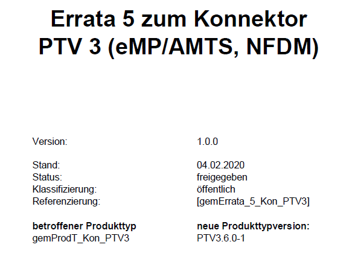

Abbildung von Errata 5 für Kon PTV3 > führt zu PTV3.6.0-1
Das Dokument soll die im vorliegenden Errata beschriebenen Änderungen im PET abbilden.
Test führt den funktionalen (Zulassungs-)Test des Kon PTV 3 in der Produkttypversion 3.6.0-1 auf dem Anforderungsgsstand von Kon PTV 3.6.0 durch und fängt das Delta (= dieses Erratum) über EVn ab. Es wird also kein Releaseprojekt für den Test von Kon PTV3.6.0-1 erzeugt.
Das Errata wird vorab für künftige zulassungsfähige Kon PTVn abgebildet, vermutlich kommt die nächste PTV 3.6.0-2 mit der Veröffentlichung von R3.1.3 am 02.03.20 und wird längere Zeit zulassungsfähig sein.
Im Errata - zur besseren Lesbarkeit - ggf. enthaltene unveränderte Spezifikationsanteile wurden hier nicht übernommen.
Die zum Errata veröffentlichten Dokumente sind im ELO zu finden:
Dokumentenlandkarte, in der die Produkttypversion Kon PTV3.6.0-1 eingeführt wird: elodms://3677051
snapshot vom Deckblatt des veröffentlichten Erratum:

Inhaltsverzeichnis
Der Konnektorhersteller ist verantwortlich für die Herausgabe der gSMC-K. Die Anforderungen zur Personalisierung der gSMC-K werden im Konnektor-Produkttypsteckbrief abgebildet und dort dem Prüfverfahren "Herstellererklärung funktionale Eignung" zugeordnet. Dazu wird eine eigene Tabelle für die Anforderungen an die gSMC-K-Herausgabe im Abschnitt "Herstellererklärung
funktionale Eignung" eingefügt.
3.1.2 Herstellererklärung funktionale Eignung
[Neue Tabelle am Ende von Kapitel 3.1.2:]
Tabelle 7: Anforderungen zur funktionalen Eignung "Herstellererklärung" zur Herausgabe der gSMC-K
...
Um abzusichern, dass mit der Umstellung der Telematikinfrastruktur auf den ECC-Algorithmus in vier Jahren alle Konnektoren, die ab Mitte 2020 installiert werden, per Softwareupdate umgestellt werden können, wird die Vorbereitung von ECC-Zertifikaten auf der gSMC-K in der Spezifikation neu geregelt.
Dazu wird eine Verpflichtung aufgenommen, ab Mitte 2020 nur ECC-personalisierte gSMC-K auszuliefern.
Mit dem Konnektor PTV4 wird die ECC-Personalisierung der gSMC-K im Administratorinterface sichtbar.
Durch die Anforderung zur Unterstützung von beiden Personalisierungsvarianten wird eine Abbildung in einem Zulassungverfahren ermöglicht.
in Kapitel 3.1 Konnektoridentität und gSMC-K
A_18928
Der Hersteller des Konnektors MUSS die Konnektoren mit einer gSMC-K mit personalisierten RSA- und ECC-Zertifikaten gemäß TAB_KON_856 ausstatten. <=